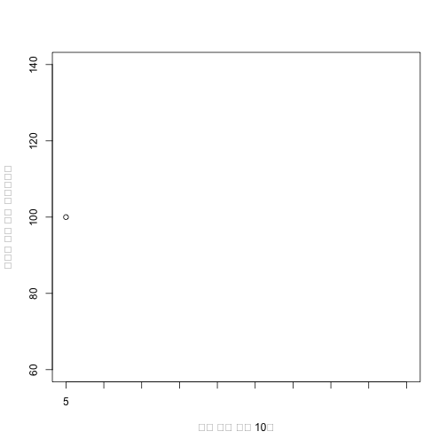

xwMOOC 기계학습
소설 텍스트 데이터 분석 기초
텍스트 데이터 분석 목표
- 한국 소설 텍스트 데이터를 처리한다.
- 텍스트 데이터 기본적인 전처리 방법을 숙지한다.
- 텍스트 데이터 기초 통계 방법 및 한계를 확인한다.
1. 텍스트 데이터 1
텍스트 데이터는 어디서나 확인할 수 있다. 신문, 잡지, 책, 연설문, 노래가사 등 셀 수도 없이 많은 사람들이 텍스트를 뿜어냈고, 앞으로는 로봇이 소설을 쓰고, 기사를 작성하고, 노래도 만들고 있어 저작권 개념도 새롭게 정립해야 하는 시점이 되었다.
그전에 텍스트 데이터를 특히, 한국어를 R 기계학습 준비로 처리하는 기초적인 방법에 대해서 살펴본다. 우선, 유닉스 기반 기계학습 작업흐름에 맞춰 텍스트 데이터를 분석하려면, 한글 텍스트 데이터를 찾아야 한다. 하지만, 쉽지 않을 것이다. 이유가 여러가지 있지만, 우선 동일한 콘텐츠라고 하더라도 한글과 컴퓨터 아래한글, 마이크로소프트 워드, 아도브 PDF 파일 형태로 저장되어 있는 것이 대부분이다. 왜 이렇게 특정 플랫폼, 소프트웨어에 종속되어 자유, 공유, 협업을 잊어버려야 하는지 아쉬움이 남지만 이것이 현실이다.
우선 시애틀 벨뷰 통합한국학교 황순원 소나기 워드 파일을 다운로드 받아 UTF-8 인코딩으로 텍스트 파일로 저장한다.
1.1. 소나기 소설 데이터 불러오기 2
R은 기본적으로 텍스트 인코딩환경이 설정하기 나름이지만, UTF-8 으로 설정하는 것을 권장한다. 만개에 이상(공식 CRAN 저장소와 비공식 GitHub 저장소 포함)으로 팩키지가 CP949 같은 특정 플랫폼에 종속되기 보다는 인터넷 환경의 표준인 UTF-8 을 기본으로 작업하는 것이 향후 디버깅이나 후행 작업 편의성과 호환성을 고려하면 훨씬 이득이 크다.
scan 함수를 사용했고, encoding = "UTF-8" 인자를 넣어 처리했으며, sep="\n" 구분자를 사용해서 각줄을 기준으로된 벡터를 기본 자료구조로 황순원 소나기 소설을 불러온다.
sonagi.text.v <- scan("data/sonagi.txt", what="character", sep="\n", encoding = "UTF-8")1.2. 소설 텍스트 데이터 전처리
strsplit 함수를 사용해서 쪼개는데 정규표현식 \\W 을 사용하는데 의미는 단어가 아닌 것(예를 들어, 구두점 문자, 공백문자 등)을 기준으로 쪼갠다는 의미가 된다. 출력값이 리스트 데이터 형이라 이를 벡터 데이터형으로 unlist 함수를 사용해서 변환한다. 이유는 소나기 소설을 단어 단위로 쪼개면 "" 빈문자열도 포함되기 때문에 이를 제거하기 위함이다.
sonagi.words.l <- strsplit(sonagi.text.v, "\\W")
sonagi.word.v <- unlist(sonagi.words.l)
sonagi.word.v <- sonagi.word.v[which(sonagi.word.v != "")]
head(sonagi.word.v)[1] "5"
1.3. 소설 텍스트 데이터 기초 통계분석
sonagi.word.v 벡터에는 단어만 쭉 들어 있는 자료형이다. 관심있는 것은 특정 단어가 얼마나 출현하는지 알고싶다고 가정한다. 예를 들어 소년은 이라는 단어가 얼마나 황순원 소나기 소설에서 출현하는 출현빈도를 계산해 본다. 전체 빈도수는 length(sonagi.word.v) 함수를 통해 계산하고, 소년은이 포함된 빈도수는 length(sonagi.word.v[which(sonagi.word.v==“소년은”)])으로 계산한다. 이를 나누면 소년은이 포함된 빈도수를 계산하게 된다.
가장 출현 빈도수가 높은 단어을 추출하려면, table(sonagi.word.v) 함수로 빈도수를 세고 난 다음에, sort 함수로 내림차순으로 보면 확인하기 쉽다.
sonagi.hits.v <- length(sonagi.word.v[which(sonagi.word.v=="소년은")])
total.words.v <- length(sonagi.word.v)
sonagi.hits.v/total.words.v[1] 0
sonagi.freqs.t <- table(sonagi.word.v)
sorted.sonagi.freqs.t <- sort(sonagi.freqs.t , decreasing=TRUE)
head(sorted.sonagi.freqs.t, 10)5
1
출현빈도가 높은 단어를 파악했는데, 이를 상대적인 빈도비율을 계산해보자.
sorted.sonagi.rel.freqs.t <- 100*(sorted.sonagi.freqs.t/sum(sorted.sonagi.freqs.t))
plot(sorted.sonagi.rel.freqs.t[1:10], type="b",
xlab="최다 출현 단어 10개", ylab="소나기 원본 대비 상대빈도율", xaxt ="n")
axis(1,1:10, labels=names(sorted.sonagi.rel.freqs.t [1:10]))
1.4. 등장인물 순서 분석
소녀와 소년이 주인공으로 이 두 주인공이 소설에 어떤 순서로 출현하는지 살펴보는 것도 의미가 있는 분석이 된다.
소녀가 단어와 소년은 단어가 가장 빈도가 높은 것으로 확인되었다. 황순원 소나기 전체 소설에 두 단어가 어떻게 퍼져있는지 살펴보자.
# 소녀가 단어 퍼짐
n.time.v <- seq(1:length(sonagi.word.v))
girl.v <- which(sonagi.word.v == "소녀가")
g.count.v <- rep(NA,length(n.time.v))
g.count.v[girl.v] <- 1
# 소년은 단어 퍼짐
boy.v <- which(sonagi.word.v == "소년은")
b.count.v <- rep(NA,length(n.time.v))
b.count.v[boy.v] <- 1
par(mar=c(1,1,1,1))
par(mfrow=c(2,1))
plot(w.count.v, main="소나기 소설 속 `소녀가' 단어 퍼짐 그래프",
xlab="소나기 소설 진행시간", ylab="소녀가", type="h", ylim=c(0,1), yaxt='n')Error in plot(w.count.v, main = "소나기 소설 속 `소녀가' 단어 퍼짐 그래프", : 객체 'w.count.v'를 찾을 수 없습니다
plot(a.count.v, main="소나기 소설 속 `소년은' 단어 퍼짐 그래프",
xlab="소나기 소설 진행시간", ylab="소년은", type="h", ylim=c(0,1), yaxt='n')Error in plot(a.count.v, main = "소나기 소설 속 `소년은' 단어 퍼짐 그래프", : 객체 'a.count.v'를 찾을 수 없습니다